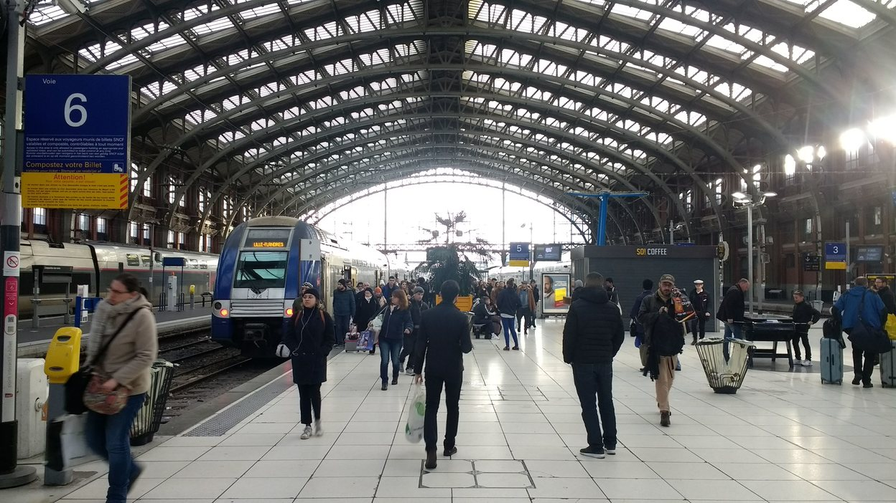

|
César SabaterMAGNET team40 avenue Halley 59650 Villeneuve d'Ascq, France e-mail: cesar dot sabater at inria dot fr |
About Me
I am a PhD candidate in computer science at INRIA-Lille in the MAGNET team. Under the supervision of Jan Ramon, I study the application of cryptogaphic protocols to dencentralized ML algorithms to enhance their privacy and verifiability. I am interested in zero knowledge proofs, secure multiparty computation, differential privacy and gossip algorithms.
Previous to starting my PhD, I obtained my Master's degree at Universidad Nacional de Rosario in 2017. During that period, I did an internship in the the CAMUS team at Université de Strasbourg. I worked on Polyhedral Compilation under the supervision of Cédric Bastoul. You can find my CV here.
Publications
Sabater, César, Aurélien Bellet, and Jan Ramon. "Distributed differentially private averaging with improved utility and robustness to malicious parties." arXiv preprint arXiv:2006.07218 (2020). [ arXiv | HAL ]
Schmitt, Maxime, César Sabater, and Cédric Bastoul. "Semi-Automatic Generation of Adaptive Codes." In IMPACT 2017, 7th International Workshop on Polyhedral Compilation Techniques. 2017. [ HAL]
Bastoul, Cédric, and César Sabater. "Automatic Generation of Adaptive Simulation Codes." In SimRace, Conference on Numerical Methods and High Performance Computing for Industrial Fluid Flows. 2015. [ HAL ]
Casali, Ana, Claudia Deco, Cristina Bender, Santiago Fontanarrosa, and César Sabater. "Asistente para el eepósito de objetos en repositorios con extracción automática de metadatos." In XV Simposio Internacional de Tecnologías de la Información y las Comunicaciones en la Educación SINTICE, pp. 133-136. 2013. [ Researchgate ]
Some pictures of places I like


